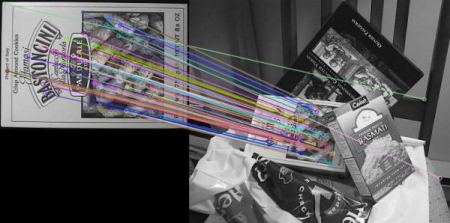

Feature Matching
Goal
In this chapter
- We will see how to match features in one image with others.
- We will use the Brute-Force matcher and FLANN Matcher in OpenCV
Basics of Brute-Force Matcher
Brute-Force matcher is simple. It takes the descriptor of one feature in first set and is matched with all other features in second set using some distance calculation. And the closest one is returned.
For BF matcher, first we have to create the BFMatcher object using cv2.BFMatcher(). It takes two optional params. First one is normType. It specifies the distance measurement to be used. By default, it is cv2.NORM_L2. It is good for SIFT, SURF etc (cv2.NORM_L1 is also there). For binary string based descriptors like ORB, BRIEF, BRISK etc, cv2.NORM_HAMMING should be used, which used Hamming distance as measurement. If ORB is using WTA_K == 3 or 4, cv2.NORM_HAMMING2 should be used.
Second param is boolean variable, crossCheck which is false by default. If it is true, Matcher returns only those matches with value (i,j) such that i-th descriptor in set A has j-th descriptor in set B as the best match and vice-versa. That is, the two features in both sets should match each other. It provides consistant result, and is a good alternative to ratio test proposed by D.Lowe in SIFT paper.
Once it is created, two important methods are BFMatcher.match() and BFMatcher.knnMatch(). First one returns the best match. Second method returns k best matches where k is specified by the user. It may be useful when we need to do additional work on that.
Like we used cv2.drawKeypoints() to draw keypoints, cv2.drawMatches() helps us to draw the matches. It stacks two images horizontally and draw lines from first image to second image showing best matches. There is also cv2.drawMatchesKnn which draws all the k best matches. If k=2, it will draw two match-lines for each keypoint. So we have to pass a mask if we want to selectively draw it.
Let’s see one example for each of SURF and ORB (Both use different distance measurements).
Brute-Force Matching with ORB Descriptors
Here, we will see a simple example on how to match features between two images. In this case, I have a queryImage and a trainImage. We will try to find the queryImage in trainImage using feature matching. ( The images are /samples/c/box.png and /samples/c/box_in_scene.png)
We are using ORB descriptors to match features. So let’s start with loading images, finding descriptors etc.
import numpy as np import cv2 import matplotlib.pyplot as plt img1 = cv2.imread('box.png',0) # queryImage img2 = cv2.imread('box_in_scene.png',0) # trainImage # Initiate ORB detector orb = cv2.ORB_create() # find the keypoints and descriptors with ORB kp1, des1 = orb.detectAndCompute(img1,None) kp2, des2 = orb.detectAndCompute(img2,None)
Next we create a BFMatcher object with distance measurement cv2.NORM_HAMMING (since we are using ORB) and crossCheck is switched on for better results. Then we use Matcher.match() method to get the best matches in two images. We sort them in ascending order of their distances so that best matches (with low distance) come to front. Then we draw only first 10 matches (Just for sake of visibility. You can increase it as you like)
# create BFMatcher object bf = cv2.BFMatcher(cv2.NORM_HAMMING, crossCheck=True) # Match descriptors. matches = bf.match(des1,des2) # Sort them in the order of their distance. matches = sorted(matches, key = lambda x:x.distance) # Draw first 10 matches. img3 = cv2.drawMatches(img1,kp1,img2,kp2,matches[:10], flags=2) plt.imshow(img3),plt.show()
Below is the result I got:

What is this Matcher Object?
The result of matches = bf.match(des1,des2) line is a list of DMatch objects. This DMatch object has following attributes:
- DMatch.distance - Distance between descriptors. The lower, the better it is.
- DMatch.trainIdx - Index of the descriptor in train descriptors
- DMatch.queryIdx - Index of the descriptor in query descriptors
- DMatch.imgIdx - Index of the train image.
Brute-Force Matching with SIFT Descriptors and Ratio Test
This time, we will use BFMatcher.knnMatch() to get k best matches. In this example, we will take k=2 so that we can apply ratio test explained by D.Lowe in his paper.
import numpy as np import cv2 from matplotlib import pyplot as plt img1 = cv2.imread('box.png',0) # queryImage img2 = cv2.imread('box_in_scene.png',0) # trainImage # Initiate SIFT detector sift = cv2.SIFT() # find the keypoints and descriptors with SIFT kp1, des1 = sift.detectAndCompute(img1,None) kp2, des2 = sift.detectAndCompute(img2,None) # BFMatcher with default params bf = cv2.BFMatcher() matches = bf.knnMatch(des1,des2, k=2) # Apply ratio test good = [] for m,n in matches: if m.distance < 0.75*n.distance: good.append([m]) # cv2.drawMatchesKnn expects list of lists as matches. img3 = cv2.drawMatchesKnn(img1,kp1,img2,kp2,good,flags=2) plt.imshow(img3),plt.show()
See the result below:
FLANN based Matcher
FLANN stands for Fast Library for Approximate Nearest Neighbors. It contains a collection of algorithms optimized for fast nearest neighbor search in large datasets and for high dimensional features. It works more faster than BFMatcher for large datasets. We will see the second example with FLANN based matcher.
For FLANN based matcher, we need to pass two dictionaries which specifies the algorithm to be used, its related parameters etc. First one is IndexParams. For various algorithms, the information to be passed is explained in FLANN docs. As a summary, for algorithms like SIFT, SURF etc. you can pass following:
FLANN_INDEX_KDTREE = 1 index_params = dict(algorithm = FLANN_INDEX_KDTREE, trees = 5)
While using ORB, you can pass the following. The commented values are recommended as per the docs, but it didn’t provide required results in some cases. Other values worked fine.:
FLANN_INDEX_LSH = 6 index_params= dict(algorithm = FLANN_INDEX_LSH, table_number = 6, # 12 key_size = 12, # 20 multi_probe_level = 1) #2
Second dictionary is the SearchParams. It specifies the number of times the trees in the index should be recursively traversed. Higher values gives better precision, but also takes more time. If you want to change the value, pass search_params = dict(checks=100).
With these informations, we are good to go.
import numpy as np import cv2 from matplotlib import pyplot as plt img1 = cv2.imread('box.png',0) # queryImage img2 = cv2.imread('box_in_scene.png',0) # trainImage # Initiate SIFT detector sift = cv2.SIFT() # find the keypoints and descriptors with SIFT kp1, des1 = sift.detectAndCompute(img1,None) kp2, des2 = sift.detectAndCompute(img2,None) # FLANN parameters FLANN_INDEX_KDTREE = 1 index_params = dict(algorithm = FLANN_INDEX_KDTREE, trees = 5) search_params = dict(checks=50) # or pass empty dictionary flann = cv2.FlannBasedMatcher(index_params,search_params) matches = flann.knnMatch(des1,des2,k=2) # Need to draw only good matches, so create a mask matchesMask = [[0,0] for i in xrange(len(matches))] # ratio test as per Lowe's paper for i,(m,n) in enumerate(matches): if m.distance < 0.7*n.distance: matchesMask[i]=[1,0] draw_params = dict(matchColor = (0,255,0), singlePointColor = (255,0,0), matchesMask = matchesMask, flags = 0) img3 = cv2.drawMatchesKnn(img1,kp1,img2,kp2,matches,None,**draw_params) plt.imshow(img3,),plt.show()
See the result below:

Additional Resources
Exercises